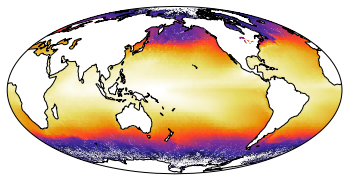
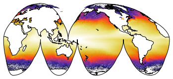

Working with projections in cartoee¶
[1]:
import ee
import cartoee as cee
import cartopy.crs as ccrs
%pylab inline
Populating the interactive namespace from numpy and matplotlib
[2]:
ee.Initialize()
Getting our Image and making a map¶
[3]:
# get an earth engine image of ocean data for 2018
ocean = ee.ImageCollection('NASA/OCEANDATA/MODIS-Terra/L3SMI').filter(ee.Filter.date('2018-01-01', '2019-01-01')).median()
[4]:
# set parameters for plotting
# will plot the Sea Surface Temp with specific range and colormap
visualization = {'bands':'sst','min':-2,'max':30,'palette':'000000,332695,802f95,ff4026,e69508,e6d95e,ffffff'}
# specify region to focus on
bbox = [-180,-90,180,90]
[5]:
# plot the result with cartoee using a PlateCarre projection (default)
ax = cee.getMap(ocean,visParams=visualization,region=bbox)
ax.coastlines()
plt.show()

Mapping with new projections¶
You can specify what ever projection is available within cartopy to display the results from Earth Engine. Here are a couple examples of global and regions maps using the sea surface temperature example.
[6]:
# create a new Mollweide projection centered on the Pacific
projection = ccrs.Mollweide(central_longitude=-180)
# plot the result with cartoee using the Mollweide projection
ax = cee.getMap(ocean,visParams=visualization,region=bbox,
proj=projection)
ax.coastlines()
plt.show()

[7]:
# create a new Goode homolosine projection centered on the Pacific
projection = ccrs.InterruptedGoodeHomolosine(central_longitude=-180)
# plot the result with cartoee using the Goode homolosine projection
ax = cee.getMap(ocean,visParams=visualization,region=bbox,
proj=projection)
ax.coastlines()
plt.show()

[8]:
# create a new orographic projection focused on the Pacific
projection = ccrs.Orthographic(-130,-10)
# plot the result with cartoee using the orographic projection
ax = cee.getMap(ocean,visParams=visualization,region=bbox,
proj=projection)
ax.coastlines()
plt.show()

[9]:
# Create a new region to focus on
natlantic = [-90,15,10,70]
# plot the result with cartoee focusing on the north Atlantic
ax = cee.getMap(ocean,visParams=visualization,region=natlantic)
ax.coastlines()
ax.set_title('The Gulf Stream')
plt.show()